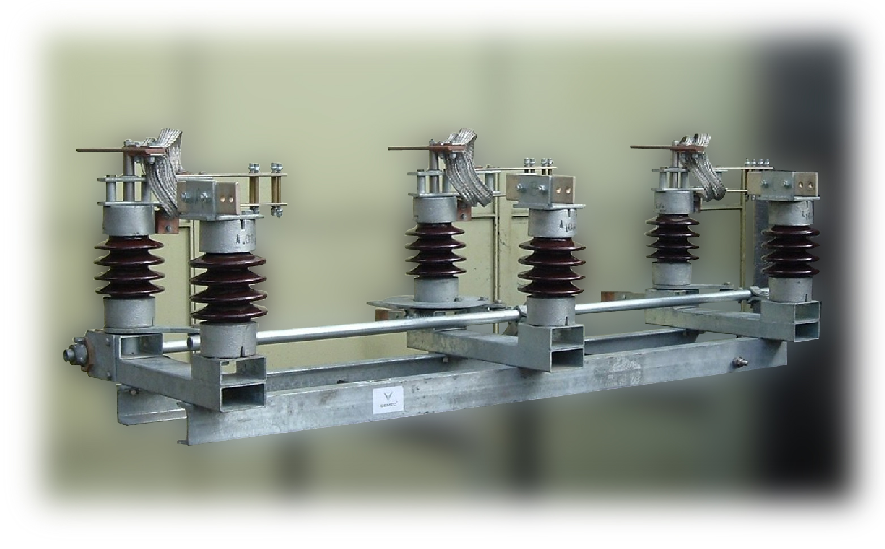
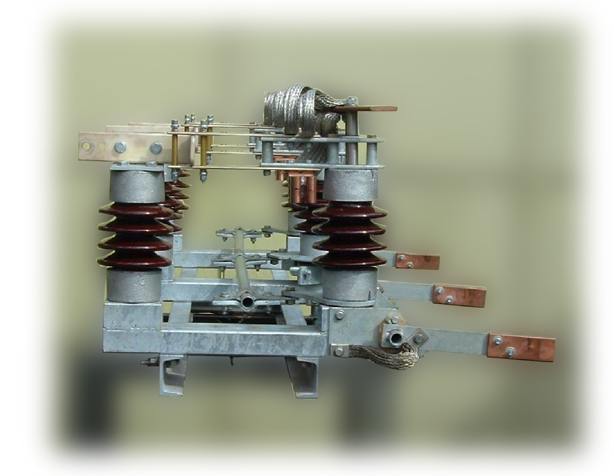

SECCIONADORES UNIPOLARES Y TRIPOLARES DE MEDIA TENSION PARA INTERIOR
Características Técnicas Principales:
- Para ser utilizados en celdas, tableros, cámaras, etc.. Se fabrican para tensiones nominales de 6,6; 13,2 y 33 kV y en corrientes normales de 400 y 630 A y especiales, a pedido, desde 800 hasta 3200 A.-
- Pueden ser radiales o deslizantes, según la disponibilidad de espacio y la configuración de la celda del cliente.
- Los unipolares son del tipo SIRU y tripolares del tipo SIRT.-
- Su estructura de chapa de acero reforzada conforma un bastidor rígido sobre el cual van montados los aisladores de resina epoxi los que, a su vez, soportan las partes de cobre electrolítico tratado.
- El diseño de las cuchillas es a doble contacto lineal, vinculadas mediante pasadores ajustables y comprimidas por resortes.
- La elevada presión que ejercen los resortes sobre las mismas, permite que los contactos sean autolimpiantes durante las operaciones de apertura y cierre, pudiendo además soportar elevadas corrientes instantáneas y de cortocircuito sin que el equipo resulte afectado.
- El eje principal, construido en acero, está vinculado a las cuchillas mediante bielas que, al igual que los aisladores, están ejecutadas en resina epoxi, un material no higroscópico de gran rigidez dieléctrica y mecánica, que permite el uso del aparato aun en ambientes con alto contenido de humedad.
- El seccionador SIRT incluye la palanca de accionamiento a pértiga.
COMANDO MANUAL:
a) A palanca extraíble CU.
b) A palanca extraíble CUB, más contactos auxiliares con enclave electromecánico de 12, 24, 48 y 110 VCC ó 220 VCA.
- A estos equipos se les puede adicionar el sistema de puesta a tierra, que normalmente va montado en la parte inferior del seccionador, su comando está ubicado en el lado opuesto al de las cuchillas principales; debiendo el cliente aclarar en su pedido la orientación de la PAT
- Se fabrican otros tipos de seccionadores, como ser: rotativos, pasamuros, conmutadores, etc.-
OPCIONALES:
- KIT de motorización.
- KIT para operar remotamente.


Fábrica y Ventas
Ventas - Oficinas Buenos Aires
Av Boyacá 168. (1406) Capital Federal. Argentina
Tel +54 9 11 5180 0653
Tel +54 9 11 4631 9805
mail: lorente@fibertel.com.ar